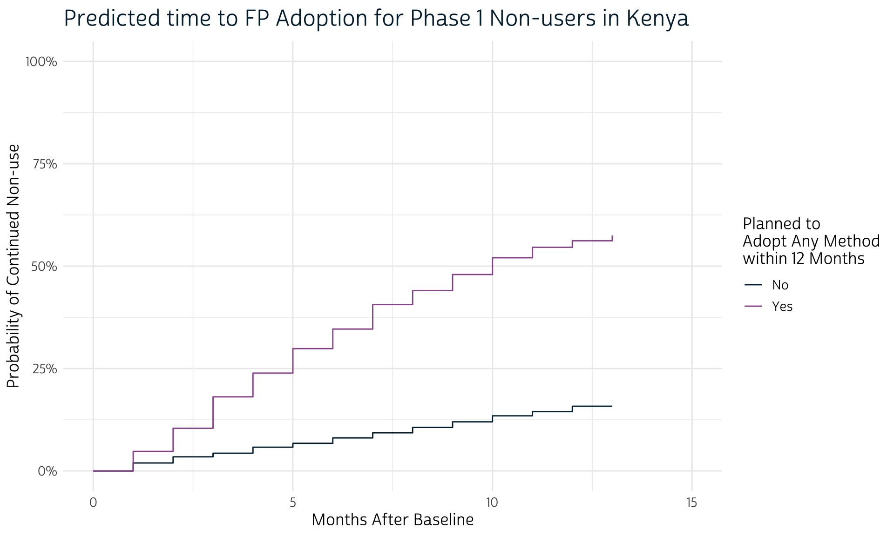
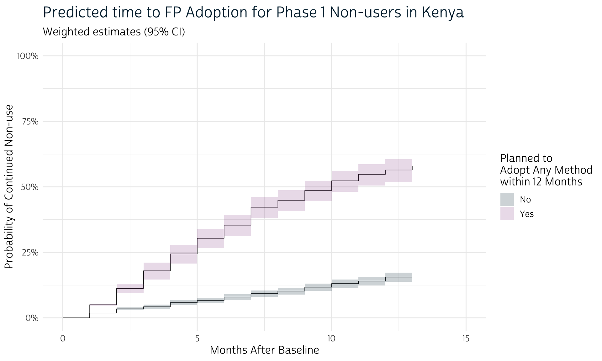
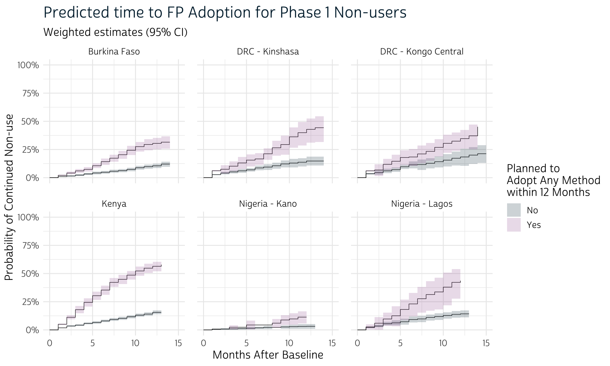

The survey package for R makes it easy to incorpate weights and other elements of survey design into survival analysis.
Several months ago, we introduced the PMA Contraceptive Calendar as a monthly recollection of contraceptive use and pregnancy status reported by women in each phase of the ongoing PMA panel study. These data are an especially useful tool for researchers interested in survival analysis, which can be used to estimate the expected amount of time to a particular family planning event (measured in months).
In that introduction, we demonstrated how to estimate time to adoption of a family planning method for women who initially were not using one. Because we focused most of our attention on data preparation and visualization techniques with the survival package for R, we set aside some issues related to PMA survey weights and its clustered sample design. In short: survival is probably the best known way to conduct this kind of survival analysis in R, but it does not include the tools we need to incorporate information about the PMA survey design.1
In our case, survival functions included in the survey package offer an easy way to use PMA weights and identifiers for each cluster and sample stratum.
Let’s pick up with the contraceptive calendar dataset we created in our earlier post, except that we’ll now include all of the variables necessary to describe PMA survey design:
ID - Unique identifier for each woman (our data includes de facto panel members only)POP - Population of study. Our extract contains six independent samples drawn from different populations; we’ll demonstrate how to use survey design information for one sample first, and then repeat for all samples.CALSTART - The date of the woman’s Phase 1 interview (CMC format). This corresponds with the first month in our survival analysis.CALSTOP - The date of the woman’s Phase 2 interview (CMC format). This corresponds with the last month in our survival analysis.CALCMC - The date of each month, formatted here as one month per row (CMC format). Most women report about 12 months between CALSTART and CALSTOP, depending on the actual spacing of Phase 1 and Phase 2 interviews. Some women do not have completed Phase 2 calendars, so we only have data from the month in CALSTART.3Additionally, we’ve included a two variables describing 1) each woman’s family planning intentions at Phase 1 and 2) her monthly family planning status reported on the Phase 2 Contraceptive Calendar.
FPPLANYR indicates whether the woman indicated at Phase 1 that she was not currently using a method, but planned to adopt one by Phase 2 (one year later). All cases are either TRUE (non-user with plans to adopt) or FALSE (e.g. Phase 1 users, or Phase 1 non-users with no such plans). Derived from FPPLANWHEN and FPPLANVAL.FPSTATUS indicates the woman’s recalled family planning status for each month between Phase 1 and her Phase 2 interview (approximately 12 months later).Since we’re working with a dataset created in a previous session, we’ll load it with read_rds from the tidyverse. We’ll also load survey (along with its tidy-helper srvyr). The survival package is listed as a dependency for survey, so it is attched automatically.
# A tibble: 208,098 × 10
# Groups: ID [17,725]
ID POP PANELWEIGHT EAID STRATA CALSTART CALSTOP CALCMC FPPLANYR FPSTATUS
<int> <chr> <dbl> <dbl> <int> <dbl> <dbl> <dbl> <lgl> <chr>
1 1 Burkina Faso 2.50 854111005 85402 1442 1453 1453 TRUE 3
2 1 Burkina Faso 2.50 854111005 85402 1442 1453 1452 TRUE 3
3 1 Burkina Faso 2.50 854111005 85402 1442 1453 1451 TRUE 3
4 1 Burkina Faso 2.50 854111005 85402 1442 1453 1450 TRUE 3
5 1 Burkina Faso 2.50 854111005 85402 1442 1453 1449 TRUE 3
6 1 Burkina Faso 2.50 854111005 85402 1442 1453 1448 TRUE 3
7 1 Burkina Faso 2.50 854111005 85402 1442 1453 1447 TRUE 0
8 1 Burkina Faso 2.50 854111005 85402 1442 1453 1446 TRUE 0
9 1 Burkina Faso 2.50 854111005 85402 1442 1453 1445 TRUE 0
10 1 Burkina Faso 2.50 854111005 85402 1442 1453 1444 TRUE 0
11 1 Burkina Faso 2.50 854111005 85402 1442 1453 1443 TRUE 0
12 1 Burkina Faso 2.50 854111005 85402 1442 1453 1442 TRUE 0
13 2 Burkina Faso 2.61 854111004 85402 1441 1452 1452 FALSE 5
14 2 Burkina Faso 2.61 854111004 85402 1441 1452 1451 FALSE 5
15 2 Burkina Faso 2.61 854111004 85402 1441 1452 1450 FALSE 5
# … with 208,083 more rowsThe numeric codes shown above in FPSTATUS refer to specific family planning methods used in a particular month, with the following exceptions:
P PregnantB BirthT Termination of pregnancy0 No pregnancy and no family planning method usedWe’ll build a binary indicator for USE of any method, as indicated by any value except for these codes. (For the moment, our data contain placeholder NA values for women with incomplete Phase 2 calendars).
Our analysis will compare time to adoption for Phase 1 non-users like the woman at the top of our dataset (ID == 1). FPPLANYR shows that she reported plans to adopt a method within 12 months after the Phase 1 interview, and the Phase 2 calendar data in FPSTATUS shows that she did so just 6 months later. We should hypothesize that women with plans probably adopt a method sooner, on average, compared with women who had no plans.
dat # A tibble: 208,098 × 11
# Rowwise: ID
ID POP PANELWEIGHT EAID STRATA CALSTART CALSTOP CALCMC FPPLANYR FPSTATUS USE
<int> <chr> <dbl> <dbl> <int> <dbl> <dbl> <dbl> <lgl> <chr> <lgl>
1 1 Burkina Faso 2.50 854111005 85402 1442 1453 1453 TRUE 3 TRUE
2 1 Burkina Faso 2.50 854111005 85402 1442 1453 1452 TRUE 3 TRUE
3 1 Burkina Faso 2.50 854111005 85402 1442 1453 1451 TRUE 3 TRUE
4 1 Burkina Faso 2.50 854111005 85402 1442 1453 1450 TRUE 3 TRUE
5 1 Burkina Faso 2.50 854111005 85402 1442 1453 1449 TRUE 3 TRUE
6 1 Burkina Faso 2.50 854111005 85402 1442 1453 1448 TRUE 3 TRUE
7 1 Burkina Faso 2.50 854111005 85402 1442 1453 1447 TRUE 0 FALSE
8 1 Burkina Faso 2.50 854111005 85402 1442 1453 1446 TRUE 0 FALSE
9 1 Burkina Faso 2.50 854111005 85402 1442 1453 1445 TRUE 0 FALSE
10 1 Burkina Faso 2.50 854111005 85402 1442 1453 1444 TRUE 0 FALSE
11 1 Burkina Faso 2.50 854111005 85402 1442 1453 1443 TRUE 0 FALSE
12 1 Burkina Faso 2.50 854111005 85402 1442 1453 1442 TRUE 0 FALSE
13 2 Burkina Faso 2.61 854111004 85402 1441 1452 1452 FALSE 5 TRUE
14 2 Burkina Faso 2.61 854111004 85402 1441 1452 1451 FALSE 5 TRUE
15 2 Burkina Faso 2.61 854111004 85402 1441 1452 1450 FALSE 5 TRUE
# … with 208,083 more rowsGiven our research interest, you might consider subsetting the dataset to exclude women who were already using a method at the time of the Phase 1 interview. In fact, we’ll want to keep track of these women so that we can calculate the correct degrees of freedom from each original sample size. For now, we’ll mark each of those cases as “User”, dividing the remaining cases into “Plan” and “No Plan” in a new variable called INTENT.
Lastly, whether who intend to use the survival package or its counterpart functions in the survey package, you’ll want to filter down to use one row per person: this should be the first month of USE or the last reported month in CALCMC, whichever comes first.
With only one row per person remaining we’ll 1) create MONTH to count the number of months after the Phase 1 interview, and 2) remove any extra variables that won’t be necessary in our analysis.
dat <- dat %>%
group_by(ID) %>%
mutate(
USEMO = case_when(USE ~ CALCMC),
KEEP = ifelse(any(USE), min(USEMO, na.rm = TRUE), max(CALCMC))
) %>%
filter(KEEP == CALCMC) %>%
mutate(.before = USE, MONTH = CALCMC - CALSTART) %>%
select(-c(starts_with("CAL"), starts_with("FP"), USEMO, KEEP)) %>%
ungroup()
dat # A tibble: 17,725 × 8
ID POP PANELWEIGHT EAID STRATA MONTH USE INTENT
<int> <chr> <dbl> <dbl> <int> <dbl> <lgl> <chr>
1 1 Burkina Faso 2.50 854111005 85402 6 TRUE Plan
2 2 Burkina Faso 2.61 854111004 85402 3 TRUE No Plan
3 3 Burkina Faso 3.21 854161007 85402 12 FALSE No Plan
4 4 Burkina Faso 0.538 854141008 85401 11 FALSE No Plan
5 5 Burkina Faso 0.358 854191022 85402 0 FALSE Plan
6 6 Burkina Faso 3.20 854141002 85402 12 FALSE No Plan
7 7 Burkina Faso 0.404 854131034 85401 11 FALSE No Plan
8 8 Burkina Faso 0.314 854191036 85402 11 FALSE No Plan
9 9 Burkina Faso 0.337 854121003 85401 0 TRUE User
10 10 Burkina Faso 2.55 854231003 85402 0 FALSE No Plan
11 11 Burkina Faso 0.221 854111006 85401 9 TRUE No Plan
12 12 Burkina Faso 0.478 854191025 85402 0 TRUE User
13 13 Burkina Faso 0.412 854191026 85402 0 TRUE User
14 14 Burkina Faso 0.404 854191013 85402 0 TRUE User
15 15 Burkina Faso 0.395 854131021 85401 0 TRUE User
# … with 17,710 more rowsLet’s review the procedure highlighted in our previous post, where we used no survey design information at all. To estimate a survival model for one population, we’ll filter dat to include only women from one sample; we’ll use Kenya as an example.
The function Surv indicates whether the observation in the last MONTH for each woman was adopted USE of a method, or that her ultimate adoption is right-censored (if at happened at all). Surv is part of a model formula provided to the function survfit; in this case, we’re modeling USE with each woman’s original INTENT at Phase 1.
ke_survival <- dat %>%
filter(POP == "Kenya") %>%
survfit(Surv(MONTH, USE) ~ INTENT, data = .)
ke_survival Call: survfit(formula = Surv(MONTH, USE) ~ INTENT, data = .)
n events median 0.95LCL 0.95UCL
INTENT=No Plan 2997 419 NA NA NA
INTENT=Plan 676 328 10 9 11
INTENT=User 3266 3266 0 NA NAThe output returned as ke_survival is an object in the survfit class defined by the survival package. We’ll get more information from this object if we pass it to tidy from the broom package.
# A tibble: 29 × 9
time n.risk n.event n.censor estimate std.error conf.high conf.low strata
<dbl> <dbl> <dbl> <dbl> <dbl> <dbl> <dbl> <dbl> <chr>
1 0 2997 0 269 1 0 1 1 INTENT=No Plan
2 1 2728 53 0 0.981 0.00269 0.986 0.975 INTENT=No Plan
3 2 2675 41 0 0.966 0.00362 0.972 0.959 INTENT=No Plan
4 3 2634 24 0 0.957 0.00407 0.964 0.949 INTENT=No Plan
5 4 2610 40 0 0.942 0.00475 0.951 0.933 INTENT=No Plan
6 5 2570 26 0 0.933 0.00515 0.942 0.923 INTENT=No Plan
7 6 2544 36 0 0.919 0.00567 0.930 0.909 INTENT=No Plan
8 7 2508 34 0 0.907 0.00613 0.918 0.896 INTENT=No Plan
9 8 2474 36 0 0.894 0.00660 0.905 0.882 INTENT=No Plan
10 9 2438 37 0 0.880 0.00707 0.892 0.868 INTENT=No Plan
11 10 2401 40 0 0.865 0.00755 0.878 0.853 INTENT=No Plan
12 11 2361 28 782 0.855 0.00788 0.869 0.842 INTENT=No Plan
13 12 1551 24 1336 0.842 0.00850 0.856 0.828 INTENT=No Plan
14 13 191 0 191 0.842 0.00850 0.856 0.828 INTENT=No Plan
15 0 676 0 90 1 0 1 1 INTENT=Plan
16 1 586 28 0 0.952 0.00925 0.970 0.935 INTENT=Plan
17 2 558 33 0 0.896 0.0141 0.921 0.872 INTENT=Plan
18 3 525 45 0 0.819 0.0194 0.851 0.789 INTENT=Plan
19 4 480 34 0 0.761 0.0231 0.796 0.727 INTENT=Plan
20 5 446 35 0 0.701 0.0270 0.739 0.665 INTENT=Plan
21 6 411 28 0 0.654 0.0301 0.693 0.616 INTENT=Plan
22 7 383 35 0 0.594 0.0342 0.635 0.555 INTENT=Plan
23 8 348 20 0 0.560 0.0366 0.601 0.521 INTENT=Plan
24 9 328 23 0 0.520 0.0397 0.563 0.482 INTENT=Plan
25 10 305 24 0 0.480 0.0430 0.522 0.441 INTENT=Plan
26 11 281 15 66 0.454 0.0453 0.496 0.415 INTENT=Plan
27 12 200 7 159 0.438 0.0473 0.481 0.399 INTENT=Plan
28 13 34 1 33 0.425 0.0559 0.474 0.381 INTENT=Plan
29 0 3266 3266 0 0 Inf NA NA INTENT=User Notice that tidy creates an object in the tibble class with several helpful columns:
estimate: this represents the estimated probability of “surviving” continuous non-use of a method for each month in time.std.error shows the standard error for each estimate on the log scale, and is used to report a 95% confidence interval (by default) in conf.high and conf.low.strata shows that the months reported in time are divided by the three groups of women defined in INTENT.n.risk shows the original group size at month 0, and those remaining for every month afterward.n.event, while those who reported no further months (right-censored cases) are reported in n.censor.In the last row, strata shows the results for 3,266 women who were already using a method at month 0 (when Phase 1 interviews were conducted). The survival probability for these women is 0 because they “survived” no months of non-use.
Let’s create a quick step-wise Time to Event plot for the two groups with data after month 0.
# Define `theme_pma` for maps
library(showtext)
sysfonts::font_add(
family = "cabrito",
regular = "../../fonts/cabritosansnormregular-webfont.ttf"
)
showtext::showtext_auto()
theme_pma <- function(){
legned_title = "Planned to Adopt Any Method within 12 Months" %>%
str_wrap(16)
list(
theme_minimal() %+replace%
theme(
text = element_text(family = "cabrito", size = 13),
plot.title = element_text(
size = 18,
color = pma_blue,
hjust = 0,
margin = margin(b = 10)
),
panel.spacing = unit(1, "lines"),
legend.position = "right"
),
scale_y_continuous(labels = scales::percent, limits = c(0, 1)),
scale_x_continuous(limits = c(0,15)),
scale_fill_manual(
aesthetics = c("color", "fill"),
values = c(
"Plan" = pma_pink,
"No Plan" = pma_blue
),
labels = c(
"Plan" = "Yes",
"No Plan" = "No"
)
),
labs(
x = "Months After Baseline",
y = "Probability of Continued Non-use",
fill = legned_title,
color = legned_title
)
)
}ke_survival %>%
broom::tidy() %>%
mutate(estimate = 1 - estimate, strata = strata %>% str_remove("INTENT=")) %>%
filter(strata != "User") %>%
ggplot(aes(x = time, y = estimate, color = strata)) +
geom_step() +
theme_pma() +
labs(title = "Predicted time to FP Adoption for Phase 1 Non-users in Kenya")
No surprises here: women who planned to adopt a method at Phase 1 are expected to adopt one sooner than women with no such plans. Notice, however, that we didn’t bother to plot confidence intervals for each line: that’s because we’ll first want to incorporate information about the PMA sampling procedure with help from the survey package.
We can use a similar workflow with survey, but it’s important to remember that the output of survfit shown above was an object of a particular class called survfit - because survival is such a popular package, the developers of broom wrote specific methods for tidy-ing objects from this class.
survey uses the survival function Surv, but has its own modeling function svykm. Its output is not familiar to broom, so we’ll have to create our own tidy output from scratch.
Before we add survey design information, let’s ensure that we’re able to reproduce the above results with svykm. This time, we’ll pass dummy survey design information to as_survey_design via a test-variable w: we’ll use this to weight every case equally with the value 1.
ke_survey <- dat %>%
filter(POP == "Kenya") %>%
mutate(w = 1) %>%
as_survey_design(weight = w) %>%
svykm(Surv(MONTH, USE) ~ INTENT, design = .)
ke_surveyWeighted survival curves:
svykm(formula = Surv(MONTH, USE) ~ INTENT, design = .)
No Plan : Q1 = Inf median = Inf Q3 = Inf
Plan : Q1 = 5 median = 10 Q3 = Inf
User : Q1 = 0 median = 0 Q3 = 0 Notice how this output looks different from ke_survival? If we try, broom will be unable to tidy it.
broom::tidy(ke_survey)Error: No tidy method for objects of class svykmlistYou can think about ke_survey as a kind of special list, with one element per group in INTENT. Each of those elements also has a list-like structure with vectors representing time (months), surv (survival probability), and standard error (if specified). For example, you can use list-syntax to check that the monthly estimates in ke_survey match those in ke_survival for women who planned to adopt a method:
[1] 1.000 1.000 0.952 0.896 0.819 0.761 0.701 0.654 0.594 0.560 0.520 0.480 0.454 0.438 0.425We’ll want to compile all of these lists in a tibble, which we’ll demonstrate with the new recommended workflow for map with purrr version 1.0.0. (We now use list_rbind in place of map_dfr, which has been superseded).
# A tibble: 32 × 3
time surv strata
<dbl> <dbl> <chr>
1 0 1 No Plan
2 0 1 No Plan
3 1 0.981 No Plan
4 2 0.966 No Plan
5 3 0.957 No Plan
6 4 0.942 No Plan
7 5 0.933 No Plan
8 6 0.919 No Plan
9 7 0.907 No Plan
10 8 0.894 No Plan
11 9 0.880 No Plan
12 10 0.865 No Plan
13 11 0.855 No Plan
14 12 0.842 No Plan
15 13 0.842 No Plan
# … with 17 more rowsWe’ll ultimately want cluster-robust standard error estimates for each month, so this output isn’t very useful on its own. Instead, we’ll specify se = TRUE in svykm. Just make sure to drop women who were originally using a method at Phase 1: the estimated standard error for these cases is infinite in month 0, and R will likely stall if you don’t exclude them from svykm! We’ll do this after our call to as_survey_design in order to preserve the correct sample size.
ke_survey <- dat %>%
filter(POP == "Kenya") %>%
mutate(w = 1) %>%
as_survey_design(weight = w) %>%
filter(INTENT != "User") %>% # remove baseline users
svykm(Surv(MONTH, USE) ~ INTENT, design = ., se = TRUE) %>% # add se = TRUE
imap(~c(.x) %>% as_tibble() %>% mutate(strata = .y)) %>%
list_rbind()
ke_survey# A tibble: 747 × 4
time surv varlog strata
<dbl> <dbl> <dbl> <chr>
1 1 1.00 0.000000134 No Plan
2 1 0.999 0.000000269 No Plan
3 1 0.999 0.000000403 No Plan
4 1 0.999 0.000000537 No Plan
5 1 0.998 0.000000671 No Plan
6 1 0.998 0.000000805 No Plan
7 1 0.997 0.000000938 No Plan
8 1 0.997 0.00000107 No Plan
9 1 0.997 0.00000121 No Plan
10 1 0.996 0.00000134 No Plan
11 1 0.996 0.00000147 No Plan
12 1 0.996 0.00000161 No Plan
13 1 0.995 0.00000174 No Plan
14 1 0.995 0.00000187 No Plan
15 1 0.995 0.00000200 No Plan
# … with 732 more rowsThe new column varlog represents the log-scale variance, which is the square of our desired standard error. The confidence intervals shown above can be reproduced if we use p = 0.05 in qnorm and exponentiate the results.
ke_survey <- ke_survey %>%
group_by(strata, time) %>%
summarise(
n.event = n(),
estimate = min(surv),
std.error = sqrt(varlog) %>% min(),
conf.high = exp(log(estimate) - std.error * qnorm(0.05/2)),
conf.low = exp(log(estimate) + std.error * qnorm(0.05/2))
)
ke_survey# A tibble: 25 × 7
# Groups: strata [2]
strata time n.event estimate std.error conf.high conf.low
<chr> <dbl> <int> <dbl> <dbl> <dbl> <dbl>
1 No Plan 1 53 0.981 0.000367 0.981 0.980
2 No Plan 2 41 0.966 0.00267 0.971 0.961
3 No Plan 3 24 0.957 0.00357 0.964 0.950
4 No Plan 4 40 0.943 0.00403 0.950 0.935
5 No Plan 5 26 0.933 0.00469 0.942 0.925
6 No Plan 6 36 0.920 0.00509 0.929 0.911
7 No Plan 7 34 0.908 0.00560 0.918 0.898
8 No Plan 8 36 0.894 0.00606 0.905 0.884
9 No Plan 9 37 0.881 0.00652 0.892 0.870
10 No Plan 10 40 0.866 0.00698 0.878 0.855
11 No Plan 11 28 0.856 0.00745 0.869 0.844
12 No Plan 12 24 0.843 0.00779 0.856 0.830
13 Plan 1 28 0.953 0.00171 0.957 0.950
14 Plan 2 33 0.899 0.00899 0.915 0.883
15 Plan 3 45 0.825 0.0135 0.847 0.803
# … with 10 more rowsThis is close to the output from ke_survival, except that you’ll notice we have no rows for months were all cases are censored (e.g. month 0). This leaves us with no column analogous to n.risk. We’ll create it from dat and then left_join the results from ke_survey. If you’d like to have a column for censored cases in n.censor, it can be made by subtracting n.event from the count of women in each month (n). Lastly, we’ll carry the same std.error and confidence interval downward for all new rows where only censored cases are listed.
ke_survey <- dat %>%
filter(POP == "Kenya") %>%
group_by(INTENT) %>%
count(MONTH) %>%
mutate(n.risk = if_else(MONTH == 0, sum(n), lag(sum(n) - n))) %>%
rename(strata = INTENT, time = MONTH) %>%
left_join(ke_survey) %>%
mutate(
n.event = n.event %>% replace_na(0),
n.censor = n - n.event,
across(
c(estimate, std.error, starts_with("conf")),
~case_when(
time == 0 ~ as.double(cur_column() != "std.error"),
!is.na(.x) ~ .x,
is.na(.x) ~ lag(.x)
)
)
)
ke_survey# A tibble: 29 × 10
# Groups: strata [3]
strata time n n.risk n.event estimate std.error conf.high conf.low n.censor
<chr> <dbl> <int> <int> <int> <dbl> <dbl> <dbl> <dbl> <int>
1 No Plan 0 269 2997 0 1 0 1 1 269
2 No Plan 1 53 2728 53 0.981 0.000367 0.981 0.980 0
3 No Plan 2 41 2944 41 0.966 0.00267 0.971 0.961 0
4 No Plan 3 24 2956 24 0.957 0.00357 0.964 0.950 0
5 No Plan 4 40 2973 40 0.943 0.00403 0.950 0.935 0
6 No Plan 5 26 2957 26 0.933 0.00469 0.942 0.925 0
7 No Plan 6 36 2971 36 0.920 0.00509 0.929 0.911 0
8 No Plan 7 34 2961 34 0.908 0.00560 0.918 0.898 0
9 No Plan 8 36 2963 36 0.894 0.00606 0.905 0.884 0
10 No Plan 9 37 2961 37 0.881 0.00652 0.892 0.870 0
11 No Plan 10 40 2960 40 0.866 0.00698 0.878 0.855 0
12 No Plan 11 810 2957 28 0.856 0.00745 0.869 0.844 782
13 No Plan 12 1360 2187 24 0.843 0.00779 0.856 0.830 1336
14 No Plan 13 191 1637 0 0.843 0.00779 0.856 0.830 191
15 Plan 0 90 676 0 1 0 1 1 90
# … with 14 more rowsNow that we know how to obtain identical results from survival and survey, we’ll rebuild our table with the actual survey weights, cluster IDs, and stratum IDs in as_survey_design.
# Fit the survival model with information from `as_survey_design`
ke_survey <- dat %>%
filter(POP == "Kenya") %>%
as_survey_design(weight = PANELWEIGHT, id = EAID, strata = STRATA) %>%
filter(INTENT != "User") %>%
svykm(Surv(MONTH, USE) ~ INTENT, design = ., se = TRUE)
# Create tidy output from the `svykm` object
ke_survey <- ke_survey %>%
imap(~c(.x) %>% as_tibble() %>% mutate(strata = .y)) %>%
list_rbind() %>%
group_by(strata, time) %>%
summarise(
n.event = n(),
estimate = min(surv),
std.error = sqrt(varlog) %>% min(),
conf.high = exp(log(estimate) - std.error * qnorm(0.05/2)),
conf.low = exp(log(estimate) + std.error * qnorm(0.05/2))
)
# Complete tidy output with information about censored cases in each month
ke_survey <- dat %>%
filter(POP == "Kenya") %>%
group_by(INTENT) %>%
count(MONTH) %>%
mutate(n.risk = if_else(MONTH == 0, sum(n), lag(sum(n) - n))) %>%
rename(strata = INTENT, time = MONTH) %>%
left_join(ke_survey) %>%
mutate(
n.event = n.event %>% replace_na(0),
n.censor = n - n.event,
across(
c(estimate, std.error, starts_with("conf")),
~case_when(
time == 0 ~ as.double(cur_column() != "std.error"),
!is.na(.x) ~ .x,
is.na(.x) ~ lag(.x)
)
)
)
ke_survey# A tibble: 29 × 10
# Groups: strata [3]
strata time n n.risk n.event estimate std.error conf.high conf.low n.censor
<chr> <dbl> <int> <int> <int> <dbl> <dbl> <dbl> <dbl> <int>
1 No Plan 0 269 2997 0 1 0 1 1 269
2 No Plan 1 53 2728 53 0.981 0.000201 0.982 0.981 0
3 No Plan 2 41 2944 41 0.965 0.00279 0.971 0.960 0
4 No Plan 3 24 2956 24 0.958 0.00418 0.966 0.950 0
5 No Plan 4 40 2973 40 0.942 0.00487 0.951 0.933 0
6 No Plan 5 26 2957 26 0.934 0.00556 0.944 0.924 0
7 No Plan 6 36 2971 36 0.920 0.00583 0.931 0.910 0
8 No Plan 7 34 2961 34 0.907 0.00689 0.920 0.895 0
9 No Plan 8 36 2963 36 0.898 0.00767 0.911 0.884 0
10 No Plan 9 37 2961 37 0.883 0.00808 0.897 0.869 0
11 No Plan 10 40 2960 40 0.869 0.00886 0.884 0.854 0
12 No Plan 11 810 2957 28 0.860 0.00982 0.876 0.843 782
13 No Plan 12 1360 2187 24 0.845 0.0103 0.862 0.828 1336
14 No Plan 13 191 1637 0 0.845 0.0103 0.862 0.828 191
15 Plan 0 90 676 0 1 0 1 1 90
# … with 14 more rowsFinally, we’ll plot these new weighted estimates, this time also adding their associated cluster-robust confidence intervals with geom_rect.
ke_survey %>%
filter(strata != "User") %>%
group_by(strata) %>%
mutate(
across(c(estimate, starts_with("conf")), ~1 - .x),
xmax = if_else(time == max(time), time, time + 1)
) %>%
ggplot(aes(x = time, y = estimate, fill = strata)) +
geom_step(linewidth = 0.25) +
geom_rect(
aes(xmin = time, xmax = xmax, ymin = conf.low, ymax = conf.high),
alpha = 0.2, color = 0
) +
theme_pma() +
labs(
title = "Predicted time to FP Adoption for Phase 1 Non-users in Kenya",
subtitle = "Weighted estimates (95% CI)"
)
So far, we’ve only generated survival curves for one of the samples in our original data extract. Now we’ll show how to iterate through each of the samples, and then compbine their results in a faceted plot.
The tricky thing here is that we need to be careful to avoid combining sample sizes in the formula survey uses to calculate degrees of freedom. Remember our point above about not subsetting the Kenya sample to exclude Phase 1 users prior to defining its survey design? By contrast, you should subset your data extract before defining survey design if your extract contains multiple samples.
Fortunately, this procedure is made very simple with two functions from dplyr: we’ll use group_by followed by group_modify.
In group_by, we’ll subset dat by the variable POP so that everything in group_modify applies only to the members of each group.
Then, in group_modify, we’ll signal an anonymous function with ~{}, inside of which .x references only the data within each group. Hence .x replaces all of the code where we’d written dat %>% filter(POP == "Kenya") above. We also replace the name ke_survey with a more general name output.
dat_surv <- dat %>%
group_by(POP) %>%
group_modify(~{
# Fit the survival model with information from `as_survey_design`
output <- .x %>%
as_survey_design(weight = PANELWEIGHT, id = EAID, strata = STRATA) %>%
filter(INTENT != "User") %>%
svykm(Surv(MONTH, USE) ~ INTENT, design = ., se = TRUE)
# Create tidy output from the `svykm` object
output <- output %>%
imap(~c(.x) %>% as_tibble() %>% mutate(strata = .y)) %>%
list_rbind() %>%
group_by(strata, time) %>%
summarise(
n.event = n(),
estimate = min(surv),
std.error = sqrt(varlog) %>% min(),
conf.high = exp(log(estimate) - std.error * qnorm(0.05/2)),
conf.low = exp(log(estimate) + std.error * qnorm(0.05/2))
)
# Complete tidy output with information about censored cases in each month
output <- .x %>%
group_by(INTENT) %>%
count(MONTH) %>%
mutate(n.risk = if_else(MONTH == 0, sum(n), lag(sum(n) - n))) %>%
rename(strata = INTENT, time = MONTH) %>%
left_join(output) %>%
mutate(
n.event = n.event %>% replace_na(0),
n.censor = n - n.event,
across(
c(estimate, std.error, starts_with("conf")),
~case_when(
time == 0 ~ as.double(cur_column() != "std.error"),
!is.na(.x) ~ .x,
is.na(.x) ~ lag(.x)
)
)
)
}) %>%
ungroup()
dat_surv# A tibble: 175 × 11
POP strata time n n.risk n.event estimate std.error conf.high conf.low n.censor
<chr> <chr> <dbl> <int> <int> <int> <dbl> <dbl> <dbl> <dbl> <int>
1 Burkina Faso No Plan 0 348 2686 0 1 0 1 1 348
2 Burkina Faso No Plan 1 30 2338 30 0.990 0.000334 0.990 0.989 0
3 Burkina Faso No Plan 2 20 2656 20 0.984 0.00304 0.990 0.979 0
4 Burkina Faso No Plan 3 16 2666 16 0.977 0.00424 0.985 0.969 0
5 Burkina Faso No Plan 4 22 2670 22 0.967 0.00500 0.976 0.957 0
6 Burkina Faso No Plan 5 16 2664 16 0.958 0.00617 0.970 0.947 0
7 Burkina Faso No Plan 6 18 2670 18 0.952 0.00666 0.964 0.940 0
8 Burkina Faso No Plan 7 22 2668 22 0.943 0.00751 0.957 0.929 0
9 Burkina Faso No Plan 8 17 2664 17 0.937 0.00783 0.952 0.923 0
10 Burkina Faso No Plan 9 32 2669 32 0.927 0.00820 0.942 0.912 0
11 Burkina Faso No Plan 10 152 2654 39 0.911 0.00936 0.928 0.895 113
12 Burkina Faso No Plan 11 1100 2534 29 0.902 0.0103 0.920 0.884 1071
13 Burkina Faso No Plan 12 783 1586 7 0.894 0.0116 0.915 0.874 776
14 Burkina Faso No Plan 13 84 1903 3 0.879 0.0131 0.902 0.857 81
15 Burkina Faso No Plan 14 26 2602 0 0.879 0.0131 0.902 0.857 26
# … with 160 more rowsThe resulting tibble dat_surv includes the POP variable we used to define each group. That’s helpful, because we’ll now want to use add facet_wrap(~POP) to our previous ggplot2 code, thereby creating one panel from each sample.
dat_surv %>%
filter(strata != "User") %>%
group_by(POP, strata) %>%
mutate(
across(c(estimate, starts_with("conf")), ~1 - .x),
xmax = if_else(time == max(time), time, time + 1)
) %>%
ggplot(aes(x = time, y = estimate, fill = strata)) +
geom_step(linewidth = 0.25) +
geom_rect(
aes(xmin = time, xmax = xmax, ymin = conf.low, ymax = conf.high),
alpha = 0.2, color = 0
) +
theme_pma() +
labs(
title = "Predicted time to FP Adoption for Phase 1 Non-users",
subtitle = "Weighted estimates (95% CI)"
) +
facet_wrap(~POP) # one panel per sample 
Certain functions like survival::survfit function do accept a weight argument, but these are intended for frequency weights representing duplicate observations. Our discussion concerns survey weights representing each woman’s sampling probability. You can use the weight arguments in the survival package to obtain weighted point-estimates, but the standard error estimation will be incorrect. See discussion here.↩︎
PANELWEIGHT should be used in analyses of all questions on the female questionnaire for women who were interviewed in both Phase 1 and Phase 2 survey rounds. See our weighting guide for details.↩︎
We discuss reasons for missing data in our previous Contraceptive Calendar post. The data we feature here have been modified to include women who maintained the same family planning status throughout the duration of the calendar period.↩︎